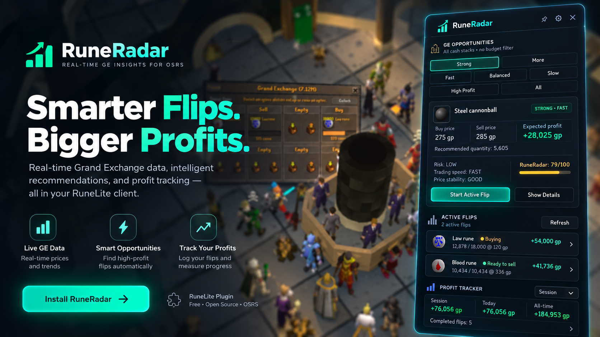
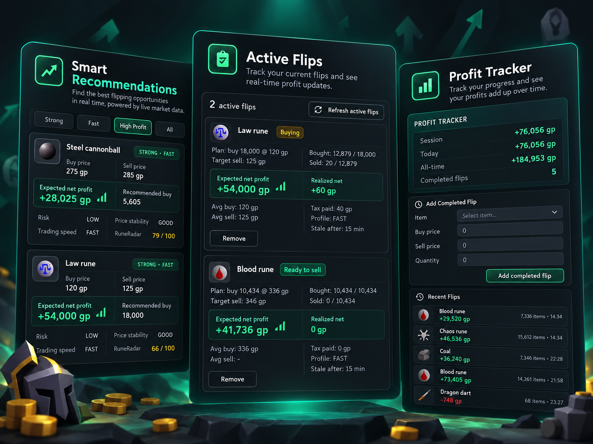

01
Smart recommendations
Find opportunities based on your cash stack, expected profit, ROI, liquidity and market conditions.
RuneRadar analyzes Grand Exchange opportunities and helps you find, track and manage flips directly inside RuneLite.

Features
RuneRadar brings market analysis, recommendations, active flip tracking and profit tracking together inside one RuneLite plugin.

Find opportunities based on your cash stack, expected profit, ROI, liquidity and market conditions.
Track supported Grand Exchange buys and sells and keep your current flips organized.
Track realized profit, estimated GE tax and completed flip performance without spreadsheets.
See when a flip appears stale so you can decide whether your Grand Exchange offer needs adjusting.
Switch between fast, balanced, slow and high-profit opportunity modes.
RuneRadar provides information and tracking while leaving every click and trade under your control.
Pricing
Use the core RuneRadar features for free. Pro is being built for active flippers who want more control, more opportunities and deeper tools.
Free
For players who want smarter flipping without paying.
RuneRadar Pro
Built for players who flip regularly and want more control over capital, risk and timing.
Pro is not live yet. Pricing and features may change before launch.
Install
RuneRadar is distributed through the official RuneLite Plugin Hub. You do not need to download files manually.
Start the RuneLite client as you normally would.
Open the plugin configuration and go to the Plugin Hub.
Search for RuneRadar and click Install.
FAQ
No. RuneRadar provides market information, tracking and guidance. You remain in control of all clicks and trades.
Yes. RuneRadar is built as a RuneLite plugin and is distributed through the RuneLite Plugin Hub.
Not yet. The Pro version is being prepared alongside the payment and account system.
No. Grand Exchange prices change constantly. RuneRadar helps surface opportunities, but every trade still carries market risk.
RuneRadar